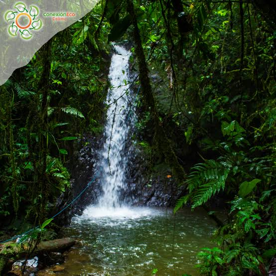

Cascadas José Natillas
Un fascinante circuitos de más de 10 casscadass escondidass entre las montañas. Es un plan de caminata muy cotizado que puedes coordinar a través de operadores locales autorizados como Conexión Eco Calima desde instagram
Dirección: Vereda La Gavia / Sector Remolino
Horario: Lunes a Domingo de 8:00 a.m. a 4:30 p.m.